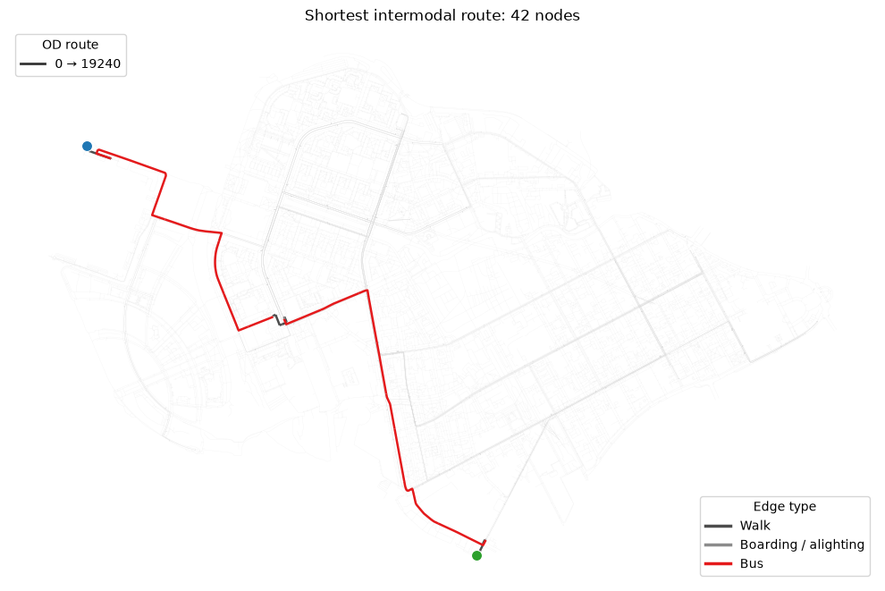
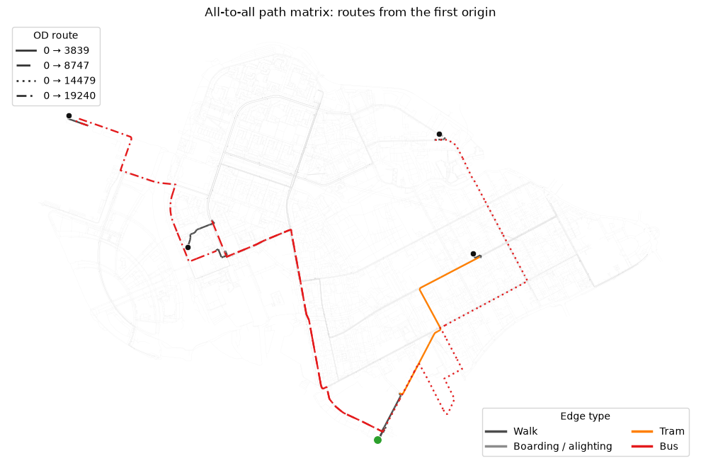

Shortest paths and OD matrices¶
Choose output="distances", "paths", or "both" with the general Dijkstra and OD helpers.
Combined results calculate costs and paths in the same searches. This notebook covers single-source,
nearest-source, independent-source, all-to-all and pairwise queries, lazy routes and OD blocks.
Costs use minutes for time_min and meters for length_meter; cutoff is inclusive.
# To install IduEdu in a clean environment:
# !pip install IduEdu
OSM_ID = 1114252
from iduedu import get_intermodal_graph
G_intermodal = get_intermodal_graph(osm_id=OSM_ID, clip_by_territory=True)
G_intermodal.update_adjacency_matrix(weight="time_min")
sample_nodes = G_intermodal.nodes_gdf.index[:6].tolist()
source = sample_nodes[0]
destinations = sample_nodes[1:]
print(sample_nodes)
2026-10-22 17:07:07.558 | WARNING | Removing 330 nodes outside the largest strongly connected component. Retaining 21082 of 21412 nodes.
2026-10-22 17:07:07.599 | WARNING | Public transport nodes dropped with the smaller components: {'trolleybus': 2}
[0, 1, 2, 3, 4, 5]
One route, its cost and geometry¶
single_source_dijkstra(..., output="both") returns matching distance and path Series.
get_path(target) reconstructs one route from a lazy result. path_to_edges preserves actual edge
geometries and transport attributes for mapping. Missing targets have cost inf and route None.
import matplotlib.pyplot as plt
from matplotlib.lines import Line2D
from iduedu import path_to_edges, single_source_dijkstra
# Choose a distant graph node so that the resulting route is clearly visible.
source_geometry = G_intermodal.nodes_gdf.loc[source].geometry
route_target = G_intermodal.nodes_gdf.geometry.distance(source_geometry).idxmax()
single_route = single_source_dijkstra(
G_intermodal, source, target_nodes=[route_target],
weight="time_min", output="both", path_storage="lazy",
)
print(f"Travel time: {single_route.distances.loc[route_target]:.1f} min")
node_path = single_route.get_path(route_target) or []
route_edges = path_to_edges(G_intermodal, node_path, weight="time_min")
EDGE_COLORS = {
"walk": ("Walk", "#4d4d4d"),
"bus": ("Bus", "#e41a1c"),
"trolleybus": ("Trolleybus", "#984ea3"),
"tram": ("Tram", "#ff7f00"),
"subway": ("Subway", "#377eb8"),
"boarding": ("Boarding / alighting", "#8c8c8c"),
"alighting": ("Boarding / alighting", "#8c8c8c"),
"subway_station": ("Boarding / alighting", "#8c8c8c"),
}
ROUTE_LINESTYLES = ["-", (0, (7, 3)), (0, (1, 2)), (0, (5, 2, 1, 2))]
def plot_route_by_edge_type(ax, edges, *, linestyle="-", linewidth=1.7, zorder=3):
"""Plot one OD route using edge color for mode and line style for route."""
used_colors = {}
for edge_type, edge_group in edges.groupby("type", sort=False, dropna=False):
label, color = EDGE_COLORS.get(edge_type, ("Other", "#bdbdbd"))
edge_group.plot(
ax=ax,
color=color,
linewidth=linewidth,
linestyle=linestyle,
zorder=zorder,
)
used_colors[label] = color
return used_colors
fig, ax = plt.subplots(figsize=(10, 8))
G_intermodal.edges_gdf.plot(ax=ax, color="#dddddd", linewidth=0.2, alpha=0.4, zorder=1)
used_colors = plot_route_by_edge_type(ax, route_edges, linewidth=1.8)
G_intermodal.nodes_gdf.loc[[source]].plot(
ax=ax, color="#2ca02c", edgecolor="white", linewidth=0.8, markersize=75, zorder=5
)
G_intermodal.nodes_gdf.loc[[route_target]].plot(
ax=ax, color="#1f77b4", edgecolor="white", linewidth=0.8, markersize=75, zorder=5
)
route_handle = Line2D([0], [0], color="#333333", linewidth=2, linestyle="-", label=f"{source} → {route_target}")
mode_handles = [
Line2D([0], [0], color=color, linewidth=2.5, linestyle="-", label=label)
for label, color in used_colors.items()
]
route_legend = ax.legend(handles=[route_handle], title="OD route", loc="upper left")
ax.add_artist(route_legend)
ax.legend(handles=mode_handles, title="Edge type", loc="lower right")
ax.set_title(f"Shortest intermodal route: {len(node_path)} nodes")
ax.set_axis_off()
fig.tight_layout()
Travel time: 53.6 min

Path matrices and pairwise queries¶
Use od_matrix(output="paths") for an all-to-all matrix of node routes. mode="pairwise"
matches origins and destinations by position, returning a table indexed by (origin, destination).
Combined pairwise results expose both a dist column and a path column.
from iduedu import od_matrix
distance_rank = G_intermodal.nodes_gdf.geometry.distance(source_geometry).sort_values()
rank_positions = [len(distance_rank) // 4, len(distance_rank) // 2, 3 * len(distance_rank) // 4, -1]
matrix_origins = [source, distance_rank.index[len(distance_rank) // 10]]
matrix_destinations = distance_rank.iloc[rank_positions].index.tolist()
path_matrix = od_matrix(
G_intermodal,
origins_nodes=matrix_origins,
destination_nodes=matrix_destinations,
output="paths",
)
pairs = od_matrix(
G_intermodal,
origins_nodes=matrix_origins,
destination_nodes=matrix_destinations[:2],
mode="pairwise",
output="both",
)
print(pairs.distances)
pairwise_paths = pairs.paths
path_matrix
dist
origin destination
0 3839 24.279999
1657 8747 26.286999
| 3839 | 8747 | 14479 | 19240 | |
|---|---|---|---|---|
| 0 | [0, 17165, 1, 7, 15, 17, 20044, 26, 41, 35, 37... | [0, 17165, 1, 7, 15, 17, 20044, 20298, 20538, ... | [0, 17165, 1, 3, 2, 5, 18, 19, 20045, 20299, 2... | [0, 17165, 1, 7, 15, 17, 20044, 20298, 20538, ... |
| 1657 | [1657, 1664, 1577, 1588, 1590, 1586, 1566, 156... | [1657, 1660, 1645, 1698, 1717, 1718, 17488, 17... | [1657, 1660, 1645, 1698, 1885, 1916, 20150, 20... | [1657, 1660, 1645, 1698, 1717, 1718, 17488, 17... |
Visualize several matrix routes¶
Each non-empty matrix cell can be passed directly to path_to_edges. The plot below overlays all routes from the first origin to the selected destinations. Colors distinguish transport types, while solid and dashed patterns distinguish OD routes.
fig, ax = plt.subplots(figsize=(10, 8))
G_intermodal.edges_gdf.plot(ax=ax, color="#dddddd", linewidth=0.2, alpha=0.35, zorder=1)
first_origin = path_matrix.index[0]
route_handles = []
all_used_colors = {}
for linestyle, destination in zip(ROUTE_LINESTYLES, path_matrix.columns):
path = path_matrix.loc[first_origin, destination]
if isinstance(path, list):
edges = path_to_edges(G_intermodal, path)
all_used_colors.update(plot_route_by_edge_type(ax, edges, linestyle=linestyle, linewidth=1.7))
route_handles.append(
Line2D(
[0], [0], color="#333333", linewidth=2, linestyle=linestyle, label=f"{first_origin} → {destination}"
)
)
G_intermodal.nodes_gdf.loc[[first_origin]].plot(
ax=ax, color="#2ca02c", edgecolor="white", linewidth=0.8, markersize=75, zorder=5
)
G_intermodal.nodes_gdf.loc[path_matrix.columns].plot(
ax=ax, color="#111111", edgecolor="white", linewidth=0.6, markersize=38, zorder=5
)
mode_handles = [
Line2D([0], [0], color=color, linewidth=2.5, linestyle="-", label=label)
for label, color in all_used_colors.items()
]
route_legend = ax.legend(handles=route_handles, title="OD route", loc="upper left")
ax.add_artist(route_legend)
ax.legend(handles=mode_handles, title="Edge type", loc="lower right", ncol=2)
ax.set_title("All-to-all path matrix: routes from the first origin")
ax.set_axis_off()
fig.tight_layout()

Single-source distances¶
Use this for one origin and many possible destinations, for example an intermodal travel-time catchment around one point.
from iduedu import single_source_dijkstra
single = single_source_dijkstra(
G_intermodal, source, weight="time_min", cutoff=15, output="distances",
)
single.sort_values().head(10)
node
0 0.0
17165 0.151
8 0.612
9 0.972
1 1.413
3 1.472
7 1.48
6 1.491
10 1.523
2 1.549
Name: dist, dtype: Sparse[float32, inf]
Multi-source distance to the closest source¶
All sources are inserted into one Dijkstra queue. The result gives the distance to the nearest source, not one row per source.
from iduedu import multi_source_dijkstra
multi = multi_source_dijkstra(
G_intermodal, source_nodes=sample_nodes[:3],
weight="time_min", cutoff=15, output="distances",
)
multi.sort_values().head(10)
node
0 0.0
1 0.0
2 0.0
3 0.059
7 0.067
6 0.078
5 0.144
17165 0.151
18 0.213
15 0.217
Name: dist, dtype: Sparse[float32, inf]
Nearest source, cost and route together¶
With output="both", a nearest-source result exposes the winning graph node in nearest_sources.
These are graph node ids, even when source objects have their own labels.
nearest = multi_source_dijkstra(
G_intermodal, source_nodes=sample_nodes[:3], cutoff=15,
output="both", path_storage="lazy",
)
nearest.nearest_sources.to_frame().join(nearest.distances).head(10)
| source_node | dist | |
|---|---|---|
| node | ||
| 0 | 0 | 0.0 |
| 1 | 1 | 0.0 |
| 2 | 2 | 0.0 |
| 3 | 1 | 0.059 |
| 4 | 2 | 1.61 |
| 5 | 2 | 0.144 |
| 6 | 1 | 0.078 |
| 7 | 1 | 0.067 |
| 8 | 0 | 0.612 |
| 9 | 0 | 0.972 |
Independent parallel searches¶
dijkstra_parallel keeps a row for every source. This differs from multi_source_dijkstra,
which chooses only the nearest source for each node. Lazy storage avoids creating every route list.
from iduedu import dijkstra_parallel
parallel = dijkstra_parallel(
G_intermodal, source_nodes=sample_nodes[:3], target_nodes=destinations,
weight="time_min", cutoff=15, output="both", path_storage="lazy",
)
parallel.distances
| node | 1 | 2 | 3 | 4 | 5 |
|---|---|---|---|---|---|
| 0 | 1.413 | 1.549 | 1.472 | 3.159 | 1.693 |
| 1 | 0.0 | 0.136 | 0.059 | 1.746 | 0.28 |
| 2 | 0.136 | 0.0 | 0.077 | 1.61 | 0.144 |
OD distances and lazy paths from the same searches¶
od_matrix accepts node lists or object tables. Rows follow the origin labels, columns the destination labels.
The default output="distances" returns only costs; output="both" returns a ShortestPathResult.
get_path(origin, destination) does not rerun Dijkstra or create other routes. Accessing .paths
materializes and caches the complete path table. Lazy storage requires output="both".
joint = G_intermodal.od_matrix(
origins_nodes=sample_nodes[:3], destination_nodes=destinations,
weight="time_min", cutoff=30, output="both", path_storage="lazy",
)
print(joint.distances)
print(joint.get_path(source, destinations[0]))
assert not joint.paths_materialized
od_paths = joint.paths
assert joint.paths_materialized
od_paths
1 2 3 4 5
0 1.413 1.549 1.472 3.159 1.693
1 0.0 0.136 0.059 1.746 0.28
2 0.136 0.0 0.077 1.61 0.144
[0, 17165, 1]
| 1 | 2 | 3 | 4 | 5 | |
|---|---|---|---|---|---|
| 0 | [0, 17165, 1] | [0, 17165, 1, 3, 2] | [0, 17165, 1, 3] | [0, 17165, 1, 3, 2, 5, 4] | [0, 17165, 1, 3, 2, 5] |
| 1 | [1] | [1, 3, 2] | [1, 3] | [1, 3, 2, 5, 4] | [1, 3, 2, 5] |
| 2 | [2, 3, 1] | [2] | [2, 3] | [2, 5, 4] | [2, 5] |
Process OD rows in blocks¶
batch_size on a full calculation limits searches in flight. iter_od_matrix yields origin-row blocks,
so consume and release each block to bound retained result memory. Pairwise mode slices destinations too.
Lazy trees still require memory, and materializing every route can be expensive.
for block in G_intermodal.iter_od_matrix(
origins_nodes=sample_nodes[:5], destination_nodes=destinations,
cutoff=30, output="both", path_storage="lazy", batch_size=2,
):
print(block.distances)
# Inspect selected routes with block.get_path(origin_label, destination_label).
# Process and release this block before requesting the next one.
1 2 3 4 5
0 1.413 1.549 1.472 3.159 1.693
1 0.0 0.136 0.059 1.746 0.28
1 2 3 4 5
2 0.136 0.0 0.077 1.61 0.144
3 0.059 0.077 0.0 1.687 0.221
1 2 3 4 5
4 1.746 1.61 1.687 0.0 1.466
Function and method forms; compatibility¶
Every general helper is also a method on UrbanGraph: single_source_dijkstra, multi_source_dijkstra,
dijkstra_parallel, od_matrix and iter_od_matrix. Object tables use gdf_sources, gdf_origins
or gdf_destinations; an existing graph_node_id mapping is reused, otherwise geometries are matched
to graph nodes. Duplicate result labels can be addressed with result.get_path_at(row, column).
Existing single_source_dijkstra_path, single_source_dijkstra_path_length,
multi_source_dijkstra_path_length, multi_source_dijkstra_nearest_source,
dijkstra_path_length_parallel and multi_source_dijkstra_path remain available.
threshold is a compatible alias for cutoff on OD helpers; pass only one of them.